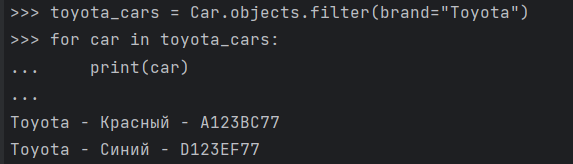
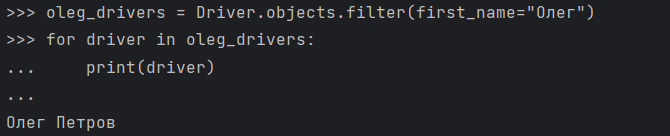
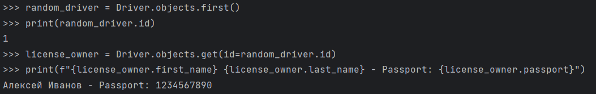
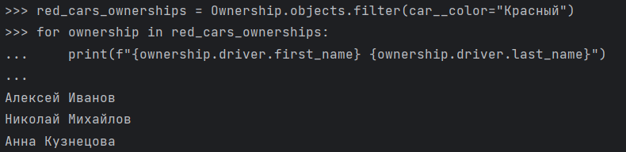
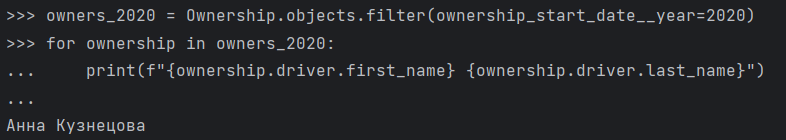
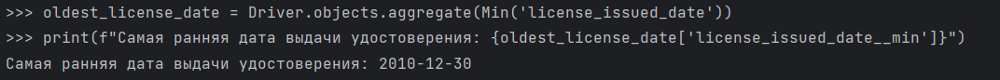
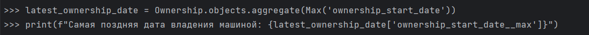
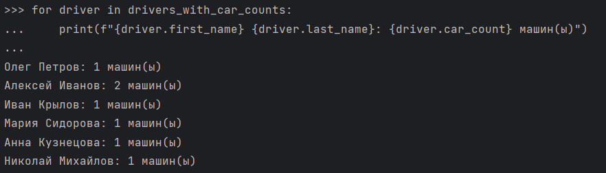
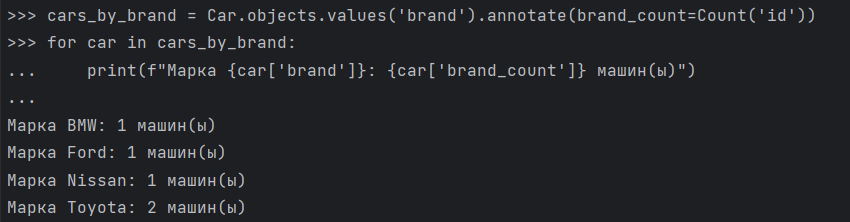
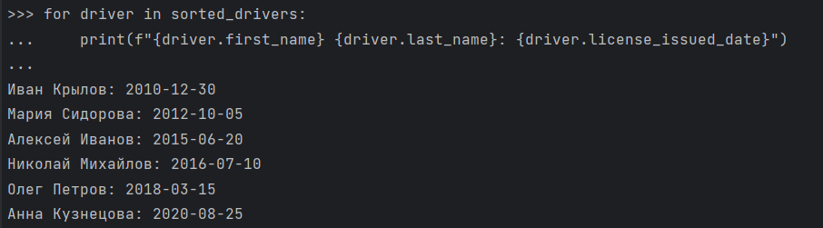

Практическая работа 3.1
Модели
1. Driver (Водитель)
Модель, представляющая водителя, его паспортные данные и дату выдачи водительского удостоверения.
Поля:
first_name(CharField): Имя водителя.last_name(CharField): Фамилия водителя.passport(CharField): Паспортные данные (уникальны).license_issued_date(DateField): Дата выдачи водительского удостоверения.
Методы:
__str__(): Возвращает строковое представление водителя (Имя Фамилия).
2. Car (Машина)
Модель, представляющая машину с маркой, цветом, годом выпуска и номером.
Поля:
brand(CharField): Марка машины.color(CharField): Цвет машины.year(IntegerField): Год выпуска.number(CharField): Номер машины (уникален).
Методы:
__str__(): Возвращает строковое представление машины (Марка - Цвет - Номер).
3. Ownership (Владение)
Модель, которая связывает водителя с машиной и указывает дату начала владения.
Поля:
driver(ForeignKey): Владелец машины (ссылка наDriver).car(ForeignKey): Машина (ссылка наCar).ownership_start_date(DateField): Дата начала владения машиной.
Методы:
__str__(): Возвращает строковое представление владения (Водитель владеет Маркой машины).
Практическое задание 1
1. Создание водителей:
from vehicles.models import Driver
from datetime import date
d1 = Driver.objects.create(
first_name="Алексей",
last_name="Иванов",
passport="1234567890",
license_issued_date=date(2015, 6, 20)
)
d2 = Driver.objects.create(
first_name="Олег",
last_name="Петров",
passport="0987654321",
license_issued_date=date(2018, 3, 15)
)
d3 = Driver.objects.create(
first_name="Мария",
last_name="Сидорова",
passport="4561237890",
license_issued_date=date(2012, 10, 5)
)
d4 = Driver.objects.create(
first_name="Анна",
last_name="Кузнецова",
passport="7894561230",
license_issued_date=date(2020, 8, 25)
)
d5 = Driver.objects.create(
first_name="Иван",
last_name="Крылов",
passport="1472583690",
license_issued_date=date(2010, 12, 30)
)
d6 = Driver.objects.create(
first_name="Николай",
last_name="Михайлов",
passport="9638527410",
license_issued_date=date(2016, 7, 10)
)
2. Создание автомобилей:
from vehicles.models import Car
c1 = Car.objects.create(brand="Toyota", color="Красный", year=2019, number="A123BC77")
c2 = Car.objects.create(brand="Ford", color="Черный", year=2015, number="B456CD77")
c3 = Car.objects.create(brand="Nissan", color="Белый", year=2020, number="C789DE77")
c4 = Car.objects.create(brand="Toyota", color="Синий", year=2018, number="D123EF77")
c5 = Car.objects.create(brand="BMW", color="Красный", year=2017, number="E456GH77")
3. Создание связей:
from vehicles.models import Ownership
from datetime import date
Ownership.objects.create(driver=d1, car=c1, ownership_start_date=date(2021, 5, 1))
Ownership.objects.create(driver=d1, car=c2, ownership_start_date=date(2021, 5, 1))
Ownership.objects.create(driver=d2, car=c3, ownership_start_date=date(2022, 7, 15))
Ownership.objects.create(driver=d3, car=c4, ownership_start_date=date(2019, 6, 20))
Ownership.objects.create(driver=d4, car=c5, ownership_start_date=date(2020, 10, 10))
Ownership.objects.create(driver=d5, car=c2, ownership_start_date=date(2021, 3, 18))
Ownership.objects.create(driver=d6, car=c1, ownership_start_date=date(2016, 12, 25))
Практическое задание 2
1. Выведете все машины марки “Toyota” (или любой другой марки, которая у вас есть)

2. Найти всех водителей с именем “Олег” (или любым другим именем на ваше усмотрение)

3. Взяв любого случайного владельца получить его id, и по этому id получить экземпляр удостоверения в виде объекта модели (можно в 2 запроса)

4. Вывести всех владельцев красных машин (или любого другого цвета, который у вас присутствует)

5. Найти всех владельцев, чей год владения машиной начинается с 2010 (или любой другой год, который присутствует у вас в базе)

Практическое задание 3
1. Вывод даты выдачи самого старшего водительского удостоверения

2. Укажите самую позднюю дату владения машиной, имеющую какую-то из существующих моделей в вашей базе

3. Выведите количество машин для каждого водителя

4. Подсчитайте количество машин каждой марки

5. Отсортируйте всех автовладельцев по дате выдачи удостоверения
